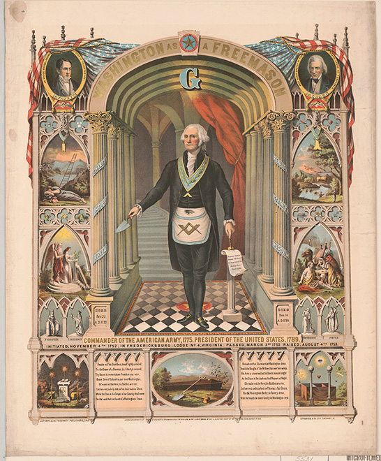
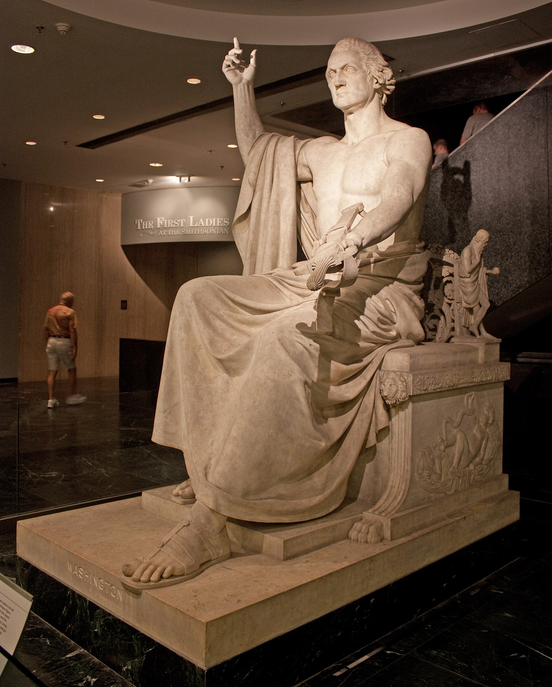
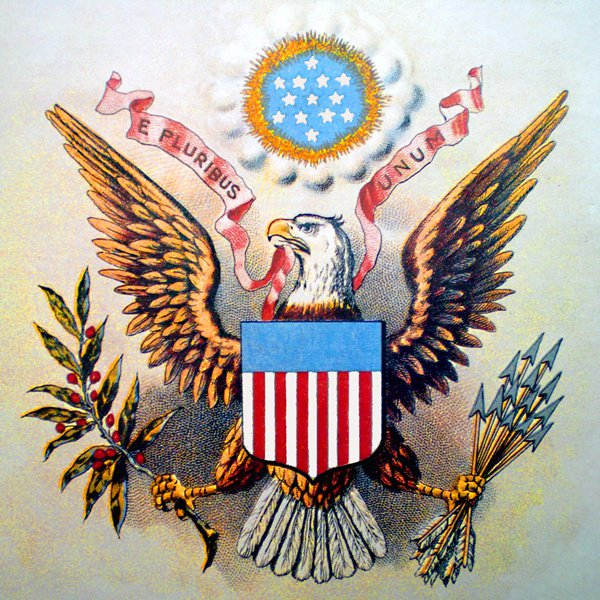
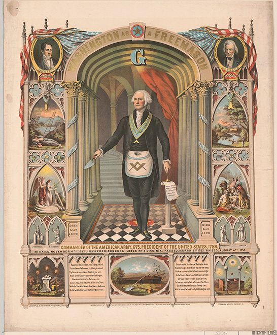
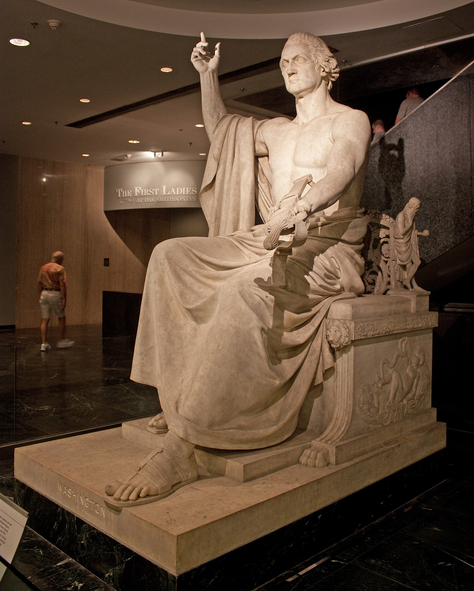
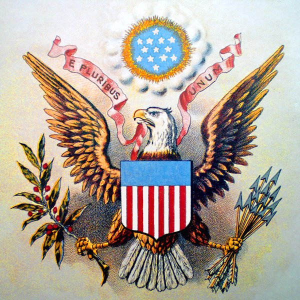
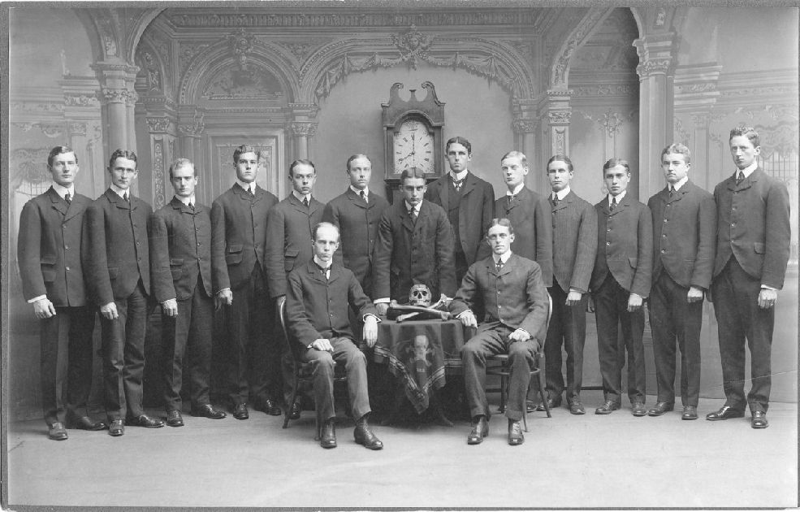
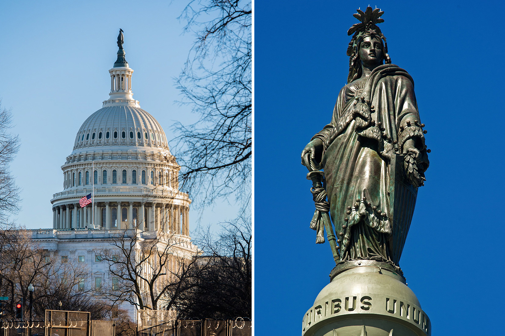
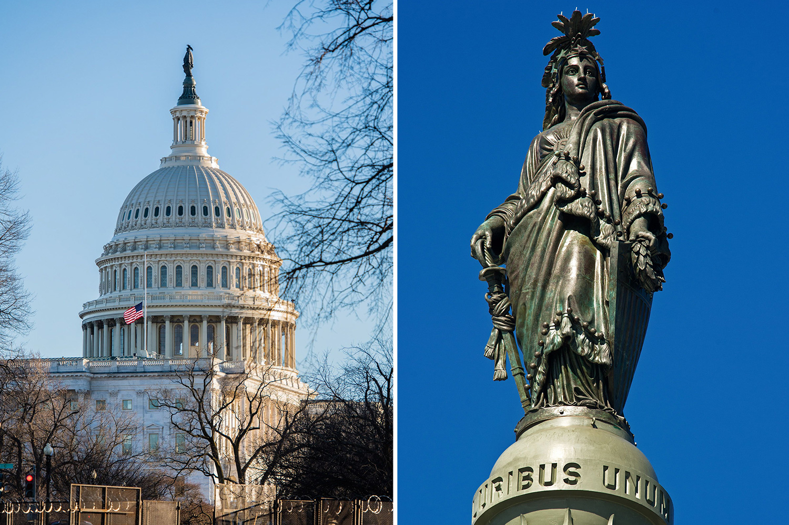
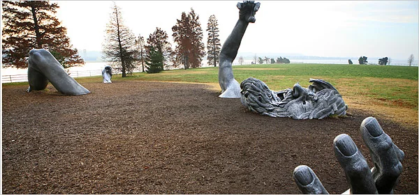

US Presidents 





Politics often feels like a battlefield where different ideologies and agendas clash, all supposedly working to improve the country. But I find myself questioning the usual belief in how effective and genuine our political systems really are. Even though political parties and leaders present themselves as separate groups dedicated to the nation's progress, I believe there might be hidden forces and influences guiding their actions behind the scenes. This perspective is based on both historical analysis and a biblical viewpoint, which I’ll explore throughout this page. By looking at the symbolic and structural aspects of government and society, I aim to uncover deeper connections that suggest a unified power is shaping political narratives and actions. I will also be evaluating this from a Biblical perspective, mainly because of how repeatedly the Bible mentions the gods of the world. Given how our government works, this should be the last place I would expect to find either symbolism or any kind of homage paid to a deity. Generally speaking, temples, symbols, and gods, in my view, are exclusively religious traits, and if one is trying to be non-religious, it’s my belief one must avoid such things to stay true to their character. Just like how you can’t be a vegetarian and enjoy your occasional steak, that simply contradicts your own personal claims. Founding FathersThe belief that the Founding Fathers of the United States were devout Christians has been a widely held view among many Americans. However, according to various scholarly sources, the reality is more complex. The religious beliefs of the United States' Founding Fathers were varied and intricate. Many of them were members of Freemasonry, a fraternal organization that focuses on moral and ethical growth. However, this involvement doesn't necessarily define their individual faiths. Scholars like David Hackett Fischer, in his book Albion's Seed (1989), point out that Founding Fathers such as George Washington and Benjamin Franklin were influenced by Enlightenment ideals like reason and personal liberty, which shaped their political thoughts. The symbolic and moral emphasis of Freemasonry likely offered a common foundation for these leaders, but their personal beliefs varied widely—from Deism, which suggests a non-interventionist creator, to more conventional Christian teachings. This variety highlights the complex motivations behind the creation of the United States government and its commitment to separating church and state. According to American Freemasonry: Its Revolutionary History and Challenge by Alain de Keghel (2017), many prominent figures in early American history, including George Washington, Benjamin Franklin, and John Hancock, were known Freemasons. The Masonic Order, with its rituals and symbolic teachings, profoundly influenced their worldview. Freemasonry, as outlined in Freemasonry and the Birth of Modern Science by Robert Lomas (2003), is not explicitly Christian; rather, it draws from Enlightenment ideals, mystery religions, and ancient philosophies. Its tenets are designed to promote reason, moral improvement, and the search for truth through allegory and symbol, rather than through traditional Christian dogma. George Washington, perhaps the most iconic of all American figures, was a Freemason from the age of 20. According to George Washington: Master Mason by William L. Fox (2003), Washington’s leadership in the Continental Army and his role in the Constitutional Convention were profoundly influenced by his Masonic beliefs. He frequently attended Masonic meetings and wore Masonic regalia during important events, such as the laying of the Capitol's cornerstone. The Deistic Beliefs of the FoundersDeism emerged during the Enlightenment as a rational approach to religion, prioritizing reason and empirical evidence over traditional doctrines. Deists believe in a creator who designed the universe but doesn't interfere with its operations or human affairs. This belief system had a significant impact on many intellectuals and political leaders in the 18th century, fostering ideals like individual liberty, scientific inquiry, and skepticism toward established institutions. During the American Revolution, Deism provided a philosophical basis for advocating a government founded on reason and natural rights instead of divine right or religious authority. This move toward secular governance is reflected in the Constitution’s design, which intentionally avoids establishing a state religion and ensures the protection of religious freedom. Many Founding Fathers, while often raised in Christian environments, subscribed to Deism rather than orthodox Christianity. Deism, which is closely aligned with Enlightenment thinking, posits that while God exists and created the world, He does not intervene in human affairs or the natural order. This belief aligns closely with Masonic principles, which emphasize reason and the pursuit of enlightenment over faith-based doctrines. For example, Thomas Jefferson’s The Jefferson Bible provides clear evidence of his rejection of core Christian doctrines. Jefferson, in his version of the Bible, removed all references to miracles and the divinity of Jesus, focusing instead on Jesus as a moral teacher. According to Jon Meacham in Thomas Jefferson: The Art of Power (2012), Jefferson was highly critical of the institutional church and its influence on society. He, like many other Founders, saw organized religion as oppressive and antithetical to the freedom they sought to establish in America. Benjamin Franklin’s role as a leading intellectual and diplomat was deeply intertwined with his Masonic ties. Franklin, a member of the influential Masonic Lodge of St. John in Philadelphia, often corresponded with European Masons, including those in France and England. According to Benjamin Franklin and Freemasonry in American History by Julius F. Sachse (1906), Franklin viewed Freemasonry as a means to promote Enlightenment values, such as rationalism, tolerance, and social progress. Franklin’s Deist beliefs and his support for religious freedom in the Constitution reflect this broader Masonic philosophy, which sought to move away from dogmatic religious systems. Separation of Church and StateThe idea of separating church and state is firmly established in the First Amendment of the U.S. Constitution, which bans the creation of a national religion and safeguards the free practice of religion. James Madison, often called the "Father of the Constitution," was a strong proponent of this separation. In his 1785 document, Memorial and Remonstrance Against Religious Assessments, Madison argued that mixing religious institutions with government could lead to corruption and undermine individual freedoms. Scholars like Mark Noll, in his book The Scandal of the Evangelical Mind (1994), highlight that the Founding Fathers aimed to create a secular government to ensure religious diversity and prevent any single denomination from having too much power. Over time, the interpretation of this separation has changed, sparking ongoing debates about the role of religion in public life and policymaking. Important Supreme Court cases, such as Everson v. Board of Education (1947) and Lemon v. Kurtzman (1971), have played key roles in defining the modern boundaries between religion and government. The Role of Christian Imagery in American CultureEven though the Founding Fathers intended for the government to be secular, Christian language and symbols have deeply influenced American public life and national symbols. For example, phrases like "In God We Trust" and "Under God" in the Pledge of Allegiance acknowledge the country’s religious roots. However, historians such as James McPherson in Battle Cry of Freedom (1988) suggest that these references were practical decisions meant to bring together a largely Christian population, rather than a reflection of the Founders' personal religious beliefs. Additionally, national symbols like the Bald Eagle and the Great Seal include elements that echo Christian imagery, emphasizing values like freedom and justice. Using these symbols helped create a familiar and reassuring story for the American people, aligning moral values with the nation's identity while still keeping the government secular. For example, while George Washington often referenced God in public speeches, his personal writings reveal that he rarely attended church services and was noncommittal on key Christian doctrines, such as the divinity of Christ. Washington’s faith, according to Holmes, was more aligned with the Masonic belief in a “Great Architect of the Universe” than with the Christian notion of a personal savior. gods of masonsFreemasonry, often portrayed as a fraternal organization dedicated to moral and ethical development, conceals deeper spiritual allegiances rooted in ancient deities such as Osiris, Apollo, and Ishtar. These gods, venerated across multiple cultures under different names, hold a central place in Masonic rituals and symbolism. J.S.M. Ward, in Freemasonry and the Ancient Gods (1921), emphasizes the importance of Osiris, also known as Apollo in Greek mythology, in Masonic teachings. The symbolic resurrection of Osiris mirrors Masonic concepts of rebirth and enlightenment, which are central to the order's philosophical framework. Osiris, a key figure in ancient Egyptian religion, was dismembered into 14 parts upon his death, with 13 pieces being recovered. The missing piece, his phallus, symbolizes fertility and regeneration. Phallic monuments such as obelisks, including the Washington Monument, honor this myth. David Ovason in The Secret Architecture of Our Nation’s Capital (2000) highlights that the Washington Monument, standing at 6,660 inches tall and 660 inches wide, ties directly into the Masonic reverence for the number 666, often associated with Apollo/Osiris and the biblical Beast. Columbia, Ishtar, and the Divine Feminine in U.S. Iconography: Osiris’s consort, known in various cultures as Ishtar, Isis, Columbia, and Liberty, is also central to Masonic symbology. The Statue of Liberty in New York Harbor is not merely a symbol of freedom but an embodiment of this ancient goddess. According to H.P. Blavatsky’s Isis Unveiled (1877), Ishtar, the Babylonian goddess of fertility and war, directly corresponds to Liberty. Similarly, the statue atop the U.S. Capitol, the Statue of Freedom (or Columbia), reinforces the Masonic veneration of this divine feminine figure. The use of "Columbia" in various contexts, such as the District of Columbia, further embeds the ancient goddess Ishtar within the heart of American governance.  

Masonic symbolism permeates the imagery of U.S. presidents, with some being depicted as Greek gods. The famous statue of George Washington by Horatio Greenough portrays the first U.S. president in a pose strikingly similar to classical representations of Zeus. As Charles L. Harper outlines in The Politics of Immortality in America (2009), this alignment underscores the Masonic reverence for ancient deities and how these symbols are woven into American political iconography. In Freemasonry, the numbers 33 and 666 carry profound symbolic significance. The number 33 aligns with the highest degree in Freemasonry and has geographical and historical connections to the occult. Mount Hermon, where the Watchers from the Book of Enoch are said to have descended, lies at coordinates 33.33° N latitude and 33.33° E longitude. R.H. Charles in The Book of Enoch: A Modern Translation (2003) notes this alignment with Masonic beliefs tied to ancient spiritual rebellions. The George Washington Masonic National Memorial in Alexandria, Virginia, standing 333 feet tall, further emphasizes these numbers and their esoteric significance. Similarly, the U.S. dollar features Masonic symbols such as the unfinished pyramid and the all-seeing eye, which, according to Charles J. Ryan in Symbols of the Founding Fathers (1955), represent human achievement and enlightenment under the omniscient eye of Osiris/Apollo. Israel and Masonic ControlMasonic influence in the U.S. is not confined to symbols and architecture; it extends into the political realm. U.S. presidents are expected to visit Israel, wear the yarmulke, and pay homage at the Western Wall, a sacred site for Jews. This public display reflects the strong political and religious ties between the U.S. and Israel. Furthermore, politicians are often required to speak before AIPAC (American Israel Public Affairs Committee), reinforcing their support for Israel’s goals. This tradition signals a deeper alignment with Masonic religious symbolism, particularly in relation to Israel's role in global governance. Historian Robert Dreyfuss, in The Devil's Game (2005), reveals that U.S. political actions in the Middle East have long been manipulated to serve both geopolitical and Masonic interests. The Jerusalem Supreme Court, adorned with pyramid and eye symbols, mirrors the Masonic architecture in Washington, D.C., reinforcing the spiritual connection between the two nations. The Illusion of Military InterventionWhile many Americans believe that the U.S. military is engaged in a noble mission to fight terrorism overseas, this narrative is a façade. According to multiple sources, including Michael Chossudovsky in America’s War on Terrorism (2005), the U.S. government has historically played a role in creating and funding extremist groups, which are then used as a pretext for military intervention in the Middle East. The media perpetuates the idea that American troops are protecting the homeland by combating terrorism, but in reality, these interventions serve a much darker purpose: securing control over the heartland of ancient gods worshipped by Freemasons. Iraq, the historical region of Mesopotamia, is often considered the cradle of civilization, and it holds immense significance for those who venerate ancient deities like Osiris. In 2003, following the U.S. invasion of Baghdad, American forces raided the city’s museums and archaeological sites. According to journalist Matthew Bogdanos in Thieves of Baghdad (2005), the troops seized not only valuable antiquities but also ancient tablets and cuneiforms related to resurrection myths, items tied to the rituals of bringing deities like Osiris back to life. Although some of these artifacts were returned, key items related to resurrection were never seen again. This theft was not random; it was a calculated effort to control spiritual objects believed to hold the key to awakening these ancient gods, including the Beast of Revelation—Apollo, Osiris, or Nimrod. Even within the U.S. military, Masonic symbolism abounds. The number 13, often associated with rebellion and transformation, is prominent in military insignia and rituals. For instance, the U.S. Seal features 13 stars, 13 arrows, and 13 olive branches, alluding to the original 13 colonies but also carrying deeper Masonic meanings related to the rebirth of civilizations. According to Manly P. Hall in The Secret Destiny of America (1944), the phoenix, a bird often associated with Osiris, symbolizes resurrection and the continual rebirth of civilizations. The phoenix appears in military emblems, subtly reinforcing the idea that the military is engaged in efforts to resurrect the ancient powers of Babylon and Egypt. The military intervention in the Middle East is not merely about fighting terrorism. It is about securing control over ancient lands tied to the origins of human civilization and the worship of gods like Osiris, Nimrod, and Ishtar. These lands, particularly Iraq, Syria, and Israel, were home to the original Babylonian empire—a civilization that, according to biblical and historical accounts, rebelled against God and sought to unify the world under a single ruler, Nimrod, at the Tower of Babel. As highlighted by Alexander Hislop in The Two Babylons (1853), this quest for a one-world order is central to the agenda of Freemasonry, which seeks to recreate a modern Babylon, a global system controlled by a select elite under the guise of democracy and freedom. This agenda is further evidenced by the ongoing Masonic project to establish a one-world order, which has been a key goal since the days of Nimrod. According to Freemason Albert Pike in his book Morals and Dogma (1871), the ultimate goal of Freemasonry is the unification of humanity under a single world government, a vision that echoes the rebellious ambitions of Nimrod at Babel. The military power projected in the Middle East serves as a mechanism for maintaining control over these sacred lands, ensuring that the Masonic elites can manipulate events to fulfill their spiritual and political goals. The Role of the U.S. in Freemasonry’s PlanAt the heart of Freemasonry’s spiritual agenda is the resurrection of the Beast mentioned in Revelation—a being associated with Apollo and Osiris. According to biblical prophecy, this Beast will rise again at the end of time, leading the world in rebellion against God. The Masonic reverence for Osiris and Apollo, particularly in their myths of death and resurrection, aligns with the prophecy of the Beast’s return. The U.S., through its control of the Middle East and its appropriation of ancient resurrection artifacts, is laying the groundwork for this event. The Washington Monument, modeled after Egyptian obelisks, stands as a phallic symbol of Osiris, commemorating his dismemberment and eventual resurrection. At 6660 inches tall and 660 inches wide, the monument’s dimensions evoke the number 666, the biblical number of the Beast, tying American political power directly to the Masonic goal of resurrecting Osiris/Apollo. The George Washington Masonic National Memorial, through its architecture and symbolism, further cements this connection. The Western Wall, a significant site in Judaism, serves as a focal point for Masonic rituals and political alliances, aligning spiritual goals with geopolitical strategies. The Masonic influence over U.S. presidents, who must pay homage at the Western Wall and pledge their support for Israel, also ties into this agenda. Israel, particularly Jerusalem, is central to biblical prophecy, and its control is crucial to the fulfillment of Masonic spiritual goals. The Supreme Court of Israel, with its pyramid and eye symbolism, mirrors the Masonic architecture in Washington D.C., further connecting the two nations’ political and spiritual destinies. One of the most striking discoveries regarding the interconnectedness of power in the U.S. comes from a 2012 study conducted by a 12-year-old girl, Bridgeman Anderson, who found that 42 out of 43 U.S. presidents were related, tracing their lineage back to King John Lackland of England. This surprising revelation, noted in various genealogical records, suggests a concentrated line of blood relations among U.S. leaders, potentially reinforcing Masonic or royal lineage ideals, where power remains within a specific bloodline. Israel - A Counterfeit of Biblical Israel?
The establishment of the modern nation of Israel in 1948 holds particular significance in religious and political contexts, yet it also raises questions about its role in a global spiritual and political framework. From a historical perspective, Israel’s foundation following World War II marked a monumental shift in Middle Eastern geopolitics, reinstating a Jewish homeland in a region central to Abrahamic faiths. However, examining its founding from an esoteric angle, especially when coupled with political alliances, reveals layers that challenge conventional narratives and connect Israel to ancient symbology and ideologies. According to biblical accounts, Israel represented God’s chosen people, a nation set apart to embody His laws and covenant. This ancient Israel was formed gradually, from Abraham’s lineage through Isaac and Jacob (later renamed Israel). The Bible details their wandering, exile, and eventual establishment in Canaan, granted through divine intervention and blessing. The formation of the 1948 nation, however, did not emerge through prophetic fulfillment as outlined in the Old Testament but was facilitated by political and military intervention through the United Nations and significant Western support, particularly from the United States and Britain. This secular birth of Israel contrasts sharply with the spiritual formation depicted in biblical texts. Central to Israel’s national identity is the six-pointed star, commonly known as the “Star of David,” displayed prominently on the Israeli flag. While it’s widely accepted as a Jewish symbol, historical and academic analyses reveal that it may have originated in esoteric and pagan traditions rather than in association with King David. According to Gershom Scholem in The Star of David: History of a Symbol, the hexagram appears in ancient Hindu and Buddhist iconography, and its geometric design has been linked to the Seal of Solomon, which was later associated with alchemy and magic. Scholem notes that this symbol was adopted by Jewish communities only in the Middle Ages, influenced by mysticism and Kabbalistic traditions. Furthermore, some researchers, such as Manly P. Hall in The Secret Teachings of All Ages, suggest that the hexagram serves as a portal or gateway symbol in occult practices, symbolizing the union of male and female principles or “as above, so below.” This dual nature aligns with the hermetic traditions found in Western esotericism, placing the Star of David within a framework more connected to mysticism than to David himself. The Alignment with U.S. Interests and Masonic IdealsThe United States’ unwavering support for Israel and the display of shared symbolism may reflect a deeper alignment beyond political interests. The U.S. government’s expectation that presidents honor Israel by wearing the yarmulke and visiting the Western Wall, a significant Jewish religious site, underscores the strong spiritual and cultural ties between the two nations. This unity suggests not only a geopolitical alliance but potentially a shared esoteric agenda, wherein Israel and the United States act in tandem to shape global order. AIPAC (American Israel Public Affairs Committee) is a prominent organization that lobbies the U.S. government to support Israeli interests. U.S. leaders frequently address AIPAC to affirm support for Israel, which aligns with Masonic goals of fostering unity among nations. As historian Robert Dreyfuss explains in The Devil’s Game, many U.S. actions in the Middle East seem orchestrated to maintain influence in territories significant to Freemasonry’s spiritual and historical roots, specifically ancient Babylon, where deities like Osiris and Nimrod were worshipped. The relationship between the United States and Israel may thus represent a modern-day “Babylonian” connection, aligning with a historical vision of a unified world power under select spiritual principles. This bond echoes the Tower of Babel narrative, where nations once attempted to consolidate power through unity. The Masonic symbols embedded in both the U.S. and Israeli structures, including the Jerusalem Supreme Court building, decorated with pyramid and eye imagery, reveal a shared architectural language pointing to ancient deities rather than the monotheistic God of Israel. In considering modern Israel, we find not the spirit of the Israelite covenant but rather a state that resonates with global symbols of power, esoteric wisdom, and alliances that seem at odds with the biblical vision. If Israel’s national identity has been shaped by secular powers and symbols associated with the very idolatry the Old Testament warned against, one must question the nature of its mission and allegiances. Ultimately, while modern Israel claims its inheritance from biblical prophecy, its foundation and alignment with Western powers bear striking resemblances to ancient empires that sought control through spiritual subjugation and secular unity rather than a nation restored by divine covenant. This view, supported by historical analysis and academic insights, suggests that the state established in 1948 is less about fulfilling a covenantal promise and more about political and secular ambitions. Global Politics and EntertainmentThe establishment of modern Israel in 1948 and its alliances extend beyond just geopolitical strategies; they also influence culture and media. One key example is TKO Holdings, the parent company of UFC (Ultimate Fighting Championship), led by CEO Ariel Emanuel. Emanuel is a powerful figure in the entertainment world, part of a larger network often linked to influential Jewish elites in Hollywood and the media. This connection sheds light on how political, cultural, and economic power is concentrated among certain figures, and how this influence shapes the narratives presented to the public. To understand Ariel Emanuel’s influence, we should look at his background. His father, Benjamin Emanuel, was a member of the Irgun, a right-wing Zionist paramilitary group active during the British Mandate of Palestine. The Irgun was known for actions like the 1946 bombing of the King David Hotel, which the British government labeled as terrorism. While Israel’s official narrative often frames these actions as necessary for statehood, critics—including Albert Einstein—saw them as extreme. In 1948, Einstein and other intellectuals wrote a letter to The New York Times, condemning the Irgun's methods as “fascist” and warning against their influence in shaping the new state. Ariel Emanuel’s leadership of TKO Holdings, which owns the UFC, shows how media and entertainment can shape public perception. Under his guidance, the UFC has grown significantly, often aligning with mainstream media narratives that support U.S. and Israeli interests. This influence extends beyond sports, impacting cultural perceptions and reinforcing political stances favorable to Israel and its allies. Control in Entertainment and MediaThe entertainment industry—movies, music, and sports—has long had a significant presence of Jewish executives and production powerhouses. Scholar Neal Gabler, in his book An Empire of Their Own: How the Jews Invented Hollywood, shows how Jewish immigrants were instrumental in founding major Hollywood studios. This influence continues today, impacting how political stories are told and how cultural perceptions are shaped. These connections go beyond executives. Many celebrities and cultural icons play roles that subtly support these narratives. Directors like Steven Spielberg, whose films often include strong Jewish themes, have shaped public understanding for years. In the music industry, artists sometimes incorporate symbols and themes linked to esoteric and Masonic ideas, which are often intertwined with Zionist symbolism. For example, the hexagram—commonly known as the Star of David—frequently appears in pop culture, carrying meanings that extend beyond its obvious association with Judaism. Ownership in the media often points to a concentration of power that aligns with Zionist interests, promoting an ideology that supports modern Israel while sidelining dissent. Movies, music, and popular media frequently include themes of unity, resilience, and conflict that mirror broader political narratives, subtly reinforcing Western and Israeli interests. Albert Einstein’s warning about the Irgun was not unique. Many scholars and analysts have examined how the concentration of power among Zionist-linked elites impacts global politics and entertainment. Ralph Schoenman, in The Hidden History of Zionism, argues that modern Israel’s creation and influence were built through alliances that prioritized political power over any spiritual or ethical connection to biblical Israel. Modern Israel, with its political alliances, media influence, and use of esoteric symbols, contrasts sharply with the biblical Israel it claims to represent. The state's partnership with Western powers, combined with its adoption of global symbols and strategies, makes it more similar to historic empires that sought control through cultural and spiritual means than a nation restored by divine covenant. This view, supported by historical analysis and academic insights, suggests that the state established in 1948 is less about fulfilling a covenantal promise and more about political and secular ambitions. The U.S. CapitolThe U.S. Capitol building, one of the most iconic structures in American government, contains layers of symbolic meaning that reflect more than just national pride or civic function. The Capitol’s design, art, and symbolism echo ancient traditions of divinity and governance, aligning with Masonic and esoteric themes that hint at a hidden spiritual framework undergirding the U.S. government. From the building’s dome and obelisk to the evocative artwork within, the Capitol stands as a modern temple, drawing on ancient architectural and symbolic forms. The Dome and Obelisk: The dome of the U.S. Capitol and the nearby Washington Monument reflect one of the oldest symbols of fertility and creation: the womb and phallus. In ancient Egyptian culture, the dome, representing the womb, and the obelisk, symbolizing the phallus, often stood together as markers of fertility, life, and creation, frequently placed near bodies of water to reflect these structures and reinforce their symbolism. The Washington Monument’s position near the Capitol dome mirrors this ancient pairing, emphasizing themes of rebirth, creation, and cosmic unity, as noted by Egyptologist James P. Allen in Middle Egyptian: An Introduction to the Language and Culture of Hieroglyphs (2010). Apotheosis of Washington: Inside the Capitol’s dome, the mural The Apotheosis of Washington, painted by Constantino Brumidi in 1865, portrays George Washington surrounded by classical gods and goddesses, symbolizing his ascension to a godlike status. This imagery reflects the classical concept of apotheosis, or the elevation of a mortal to divine status, often reserved for emperors or heroes in ancient Greece and Rome. Here, Washington, seated in the heavens alongside deities such as Mercury, Minerva, and Neptune, embodies this idea, indicating a symbolic transformation from leader to a god-like figure in the Masonic tradition. Art historian Vivien Green Fryd, in Art and Empire: The Politics of Ethnicity in the United States Capitol, 1815–1860 (2001), notes that the presence of Mercury, the god of communication, suggests Washington’s divine authority to govern and communicate new knowledge to his people. Spiritual Symbolism: For the public, The Apotheosis of Washington is often viewed as a tribute to Washington’s revered leadership. However, its deeper meaning suggests Masonic ideals of enlightenment and cosmic order. Mercury, the god of knowledge, stands near Washington, symbolizing the role of wisdom and communication, while Minerva represents strategic warfare and the intellect. These figures underscore the Capitol as a temple of knowledge, aligning the American Republic with ancient deific guidance, a concept supported by Manly P. Hall’s writings on Masonic philosophy in The Secret Destiny of America (1944). The Awakening: Adjacent to the Capitol, The Awakening by J. Seward Johnson portrays a giant bearded figure emerging from the earth. Though often regarded as a symbol of American strength and resurgence, its hidden meaning aligns with Masonic ideas of spiritual rebirth and awakening. This figure recalls Osiris, the Egyptian god of resurrection and rebirth, who is closely associated with Masonic symbolism. David Ovason, in The Secret Architecture of Our Nation’s Capital (2000), highlights how The Awakening and similar symbols of rebirth underscore the Masonic belief in the cyclical renewal of civilizations and leadership. The Capitol and its surrounding monuments feature numerous Masonic symbols and inscriptions. For example, the phrase E Pluribus Unum ("Out of Many, One") reflects the Masonic and Enlightenment ideals of unity and universal order. Furthermore, the inclusion of the all-seeing eye and pyramid in various government seals, as Charles J. Ryan discusses in Symbols of the Founding Fathers (1955), symbolizes the ever-watchful presence of divine or cosmic order, aligning American governance with these esoteric principles. ReflectionThe deeper I dig, the more I realize that the story doesn’t end here; it just keeps unraveling. Temples, monuments, and symbols tied to ancient deities are everywhere, even in places that, on the surface, appear to have nothing to do with religion. The more I think about it, the more I’m convinced that those who built these structures knew exactly what they were doing. If we take the Bible seriously, we can't ignore how the physical manifestations of its warnings are all around us—even among people who claim to be non-religious. In some ways, this only serves to strengthen my faith. It’s almost as if these symbols and structures are inadvertently proving what Scripture has warned about all along. I understand that this is a sensitive subject, especially when it involves our military. Many people have friends or family members who serve, and suggesting that there’s more to these missions than what we’re told can feel offensive or even hurtful. But I think it’s something we need to talk about. These are not just empty actions—there are deeper implications, including the possibility that we’re spending our resources and risking lives for purposes tied to ancient pagan symbols and relics that the Bible explicitly warns against. You don’t have to be a conspiracy theorist or even particularly religious to see that governments often deceive their people. And while there are countless lies to consider, this one stands out to me. What’s striking is that, in some ways, it isn’t even really hidden. The symbols are there for anyone willing to see them. Symbols are powerful—capable of uniting nations or tearing them apart. They’re just symbols, yet they inspire devotion, allegiance, and even violence. People are willing to fight for a flag, a piece of cloth, because of the story it represents. The problem is that people often fail to recognize that same devotion when it comes to other symbols—symbols that are displayed openly in places of power, symbols that speak to ancient allegiances that are far removed from democratic ideals. It's almost ironic. People who don’t believe in any god will instantly recognize a cross as a sign of Christianity, and they'll identify a person wearing one as a follower of Jesus. But when similar symbols—statues of gods, ancient quotes, or even direct references to deities—appear in public institutions or on monuments, it’s dismissed as harmless decoration or art. If we apply the same standard, shouldn’t we consider these presidents and leaders as followers of the gods they’re depicting? Shouldn’t we view these public spaces, adorned with the symbols of ancient gods, as temples of sorts? To me, it seems like we’re living in a modern extension of the ancient empires we read about in the Bible, particularly Babylon. It feels like our leaders know this too—that they understand their spiritual roots go back to these ancient systems of power. This is part of the reason why I don’t put much faith in politics. To me, everything eventually leads back to these same gods and goddesses, just under different names and in different forms. I think there’s a reason why they didn’t try to rebuild Babylon in the same physical place—it’s almost as if there's a prophecy or a curse that prevents them from doing so. In the Bible, God often speaks of bringing lands into desolation when His people turn away from Him, specifically in Canaan, and scattering the nations that tried to unify under Nimrod at Babel. I believe those same people carried their gods with them to new lands, and that’s why we see their influence even in the United States today. There’s no real historical, cultural, or spiritual reason for these deities to be acknowledged here, yet our leaders, our celebrities, and even our currency are marked by their symbols. The influence of these ancient gods is everywhere, woven into the fabric of our culture. It seems like the same forces that made Babylon great are now doing the same with the U.S. and other nations, preparing them for a new rebellion. As King Solomon wisely said, "There is nothing new under the sun." ConclusionIn conclusion, my journey through these observations has left me with a perspective I can't ignore. While many see our world’s governments and leaders as champions of democracy and freedom, I see symbols and agendas that tell a different story—one that connects more to ancient deities and spiritual ideologies than to the will of the people. I don’t believe our nations, especially ones like the United States and Israel, are operating solely on secular principles or democratic ideals. The icons, rituals, and alliances they maintain suggest ties to something much deeper, something that aligns with ancient systems of power and control rather than true liberation or godly governance. This isn’t a view I’ve arrived at lightly. I recognize the sensitivity of discussing such matters, especially when it touches on topics like military intervention, political symbols, or national identities. Yet, I feel compelled to share what I see: a world repeating the cycles of history, subtly resurrecting the spirit of empires long past under the guise of progress and unity. The need for leaders and symbols is woven into human nature; we yearn for things to worship and ideals to uphold. But I believe we must be discerning about where we place that trust. As I examine the symbols and alliances shaping our world, I can't help but question if we’re not being led toward something other than what we’re promised—a unity not of truth and liberty but of ancient, hidden influences that quietly guide the course of nations. |